人気番組『マツコ会議』で紹介されたダイエット法がすごいと話題に！たった1ヶ月で〇キロ痩せる方法とは？
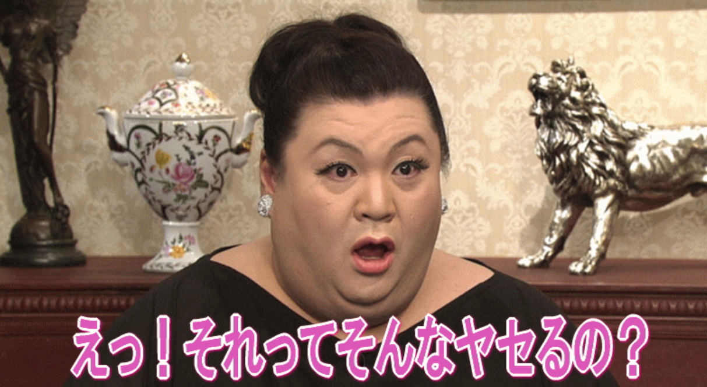
✔ダイエットを諦めた経験が何度もある
✔運動をする意欲はない
✔食べることが大好き。幸せ
こんなことに悩んでいる人はいませんか！？
色々と世間で話題になるダイエット方法を試したけど、どれも長続きせず最後までちゃんとできなかった私…
おまけに食べることが大好き。甘いものを見た瞬間に、ついつい食べてしまう、自分にも甘いのです。
そんなときにテレビをみていたら。。。
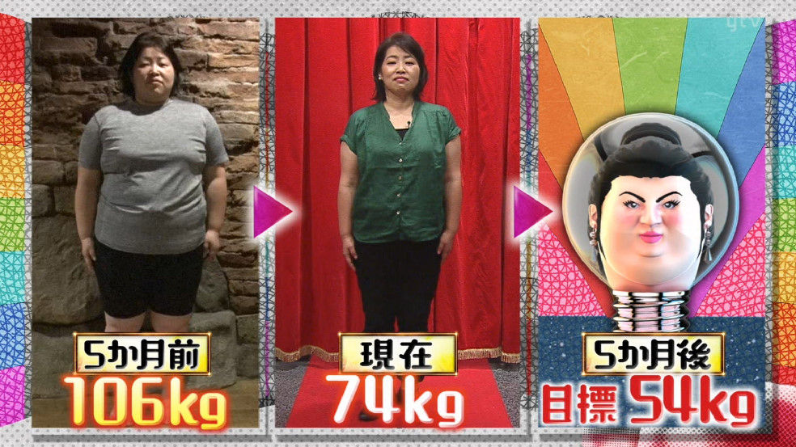
ある日、偶然、マツコ会議を見ていたら芸能人の間で大流行しているダイエット方法が紹介されてました。うそでしょ、と思いながらも私も試してみるとたった1ヶ月で11キロのダイエットに成功して、おまけにモデルのようなクビレまでできました！
今までは自分の体型に自信なんてありませんでしたが、これを使った1ヶ月後には…
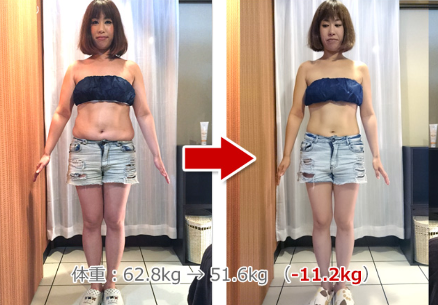
えっ、これ本当に自分のカラダ！？っていうくらいモデルのような体型になりました！
色々なダイエットにチャレンジしては失敗するたびにイヤな思いをしていたのに、このダイエット方法を試してからというもの鏡の前に立って自分のカラダを見ることが好きになりました！
芸能界でも話題沸騰ダイエット！
ドラッグストアでは買えない生酵素とは！？
市販では販売されることがない超レアな生酵素のダイエット効果がスゴすぎて芸能界で愛用者が増えているみたいです！
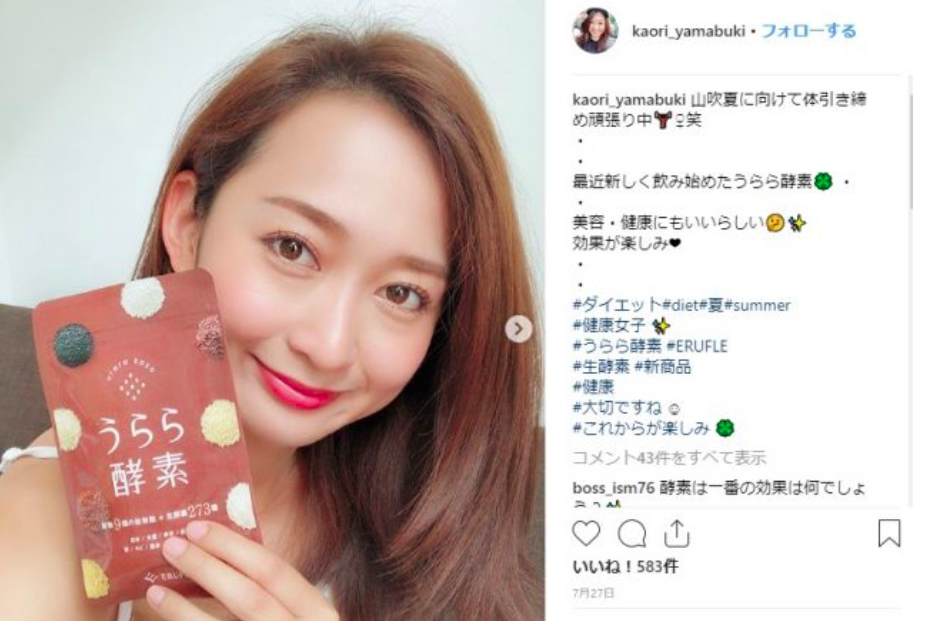
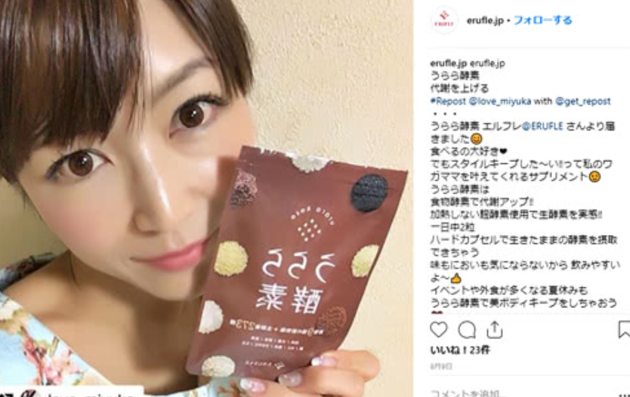
マツコ会議でも紹介されてさらに人気に拍車がかかりそうです。
簡単に1ヶ月で11キロ痩せることができる生酵素とは！？
多くの芸能人も愛用する食事制限なしで、飲むだけで痩せることができる夢のようなアイテムとは！？
それは「うらら酵素」という酵素業界で5冠を達成した生酵素サプリです。
うらら酵素は太る原因になるお米やパン、麺類などに含まれる炭水化物を強力な生酵素が体内で分解して排出してくれるのでいくら食べても太らず美ボディを作ってくれるのです。
うらら酵素はなんで痩せることができるの！？
芸能界でも話題沸騰中のうらら酵素、とても気になりますね！
それではなぜうらら酵素は短期間で痩せることができるか説明します！
マツコ会議で実際に紹介された実演動画です。

固まった炭水化物にうらら酵素を入れてかき混ぜると、なんと炭水化物が溶けてサラサラに分解されています！
これがうらら酵素の生酵素の実力です！
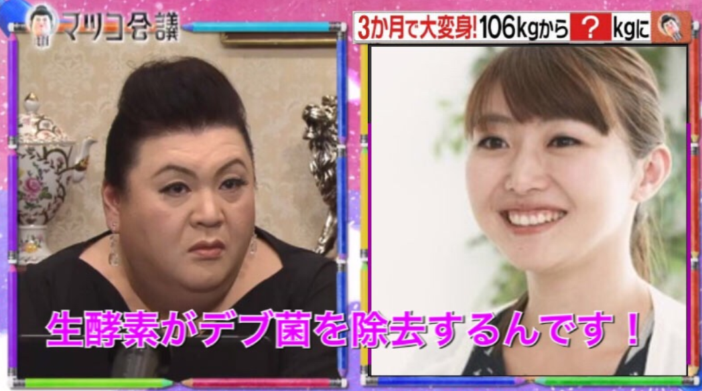
この実演からうらら酵素を飲むだけで余分な脂肪がサラサラに溶けてなくなって短期間でダイエットできることがわかると思います。
私以外にもうらら酵素のファンが急増中♪
私以外にもうらら酵素のファンが急増中です。
【カトウさん/29歳】※仮名
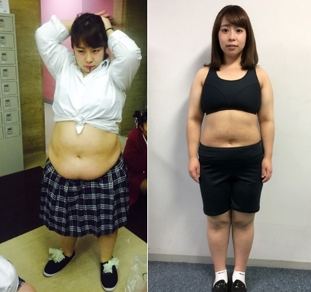
＜カトウさんの感想＞
昔から体型が太っているが悩みでした。
これはヤバイと思い色々試しましたが、どれもダメ＞＜
たまたまマツコ会議でうらら酵素が紹介されているのを見て、半信半疑で試した所、私の場合たった1カ月で20キロのダイエットに成功しました。
昔から蓄えられていた脂肪が生酵素のパワーで一気に溶けたのでしょうね（笑）
【河内さん34歳】
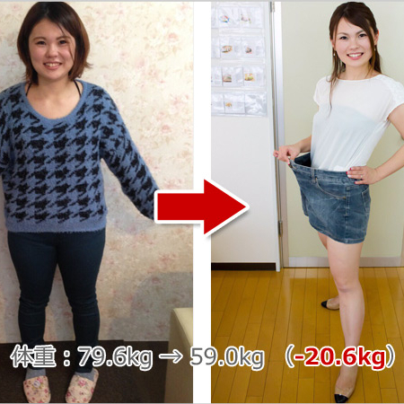
＜河内さんの感想＞
マツコ会議のスタッフさんが痩せているのを知り、試してみたくなりました。
いろいろとダイエットには失敗経験があったので買うか悩みましたが、今では買って本当によかったと思っています。
飲んですぐにお通じが良くなって、2ヶ月で20キロも痩せることができました。
周りから「痩せてかわいくなったね」と言われて嬉しかった！
日本で最もインターネットで検索された超人気商品
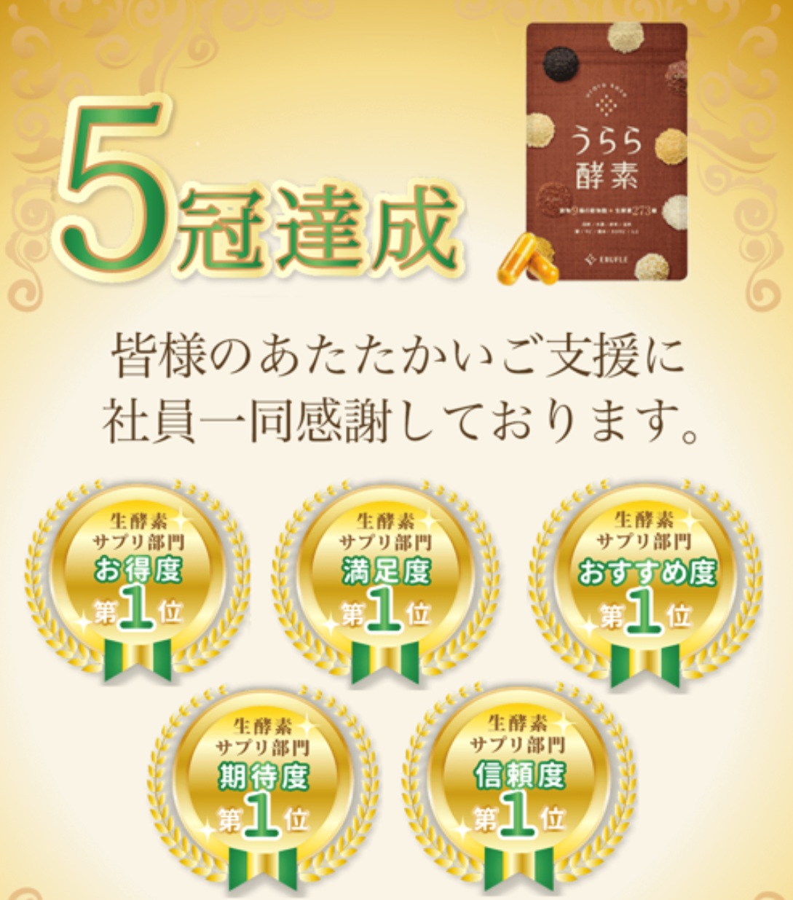
うらら酵素は、ドラッグストアなど市販では販売されてないため幻の生酵素と言われています。
また、多くの芸能人がうらら酵素を使っていることをインスタで紹介したり、人気テレビ番組のマツコ会議で放送されたりしたことによってインターネットで最も検索されている生酵素になりました。
マツコさんも驚きです！
うらら酵素できるだけ安く買いたい！
私もそう思ってさんざん探しました
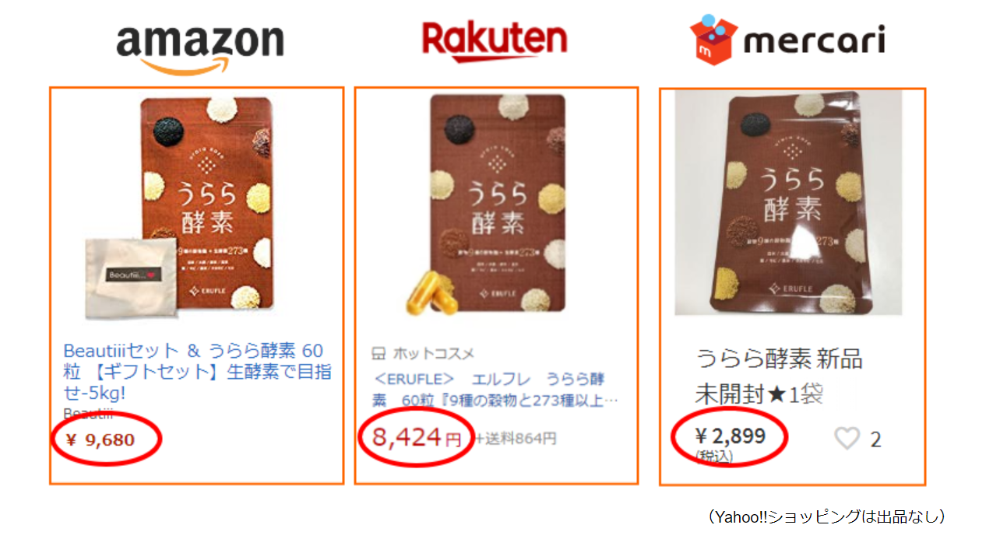
うらら酵素はAmazonなどで超高値で販売されていることが多いのですが、
実はある方法で実質0円で購入することができます。
その方法とは、うらら酵素の公式サイトから期間限定のキャンペーン価格で購入することです。
公式サイト：https://shop.erufle.jp
メルカリや転売サイトで違法で買うより公式サイトでタダで購入できた方がよっぽどお得です！
しかも、多数の得点！30日間の解約保証もあるので、万が一痩せることができなかった場合はすぐにやめることができます。
まずは、サンプル感覚でうらら酵素を試してみてはいかがでしょうか？
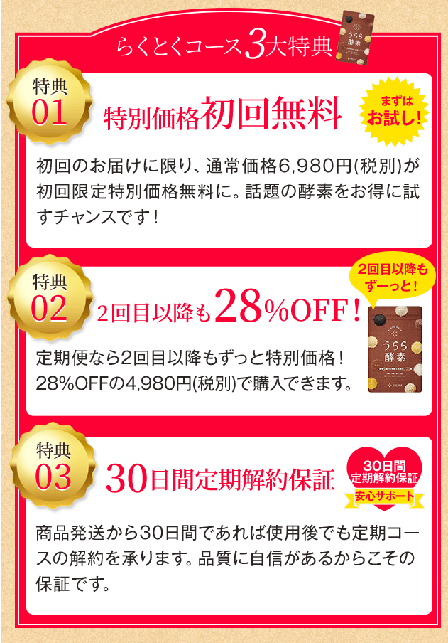
でも注文が殺到しすぎて急がないと買えないかも…
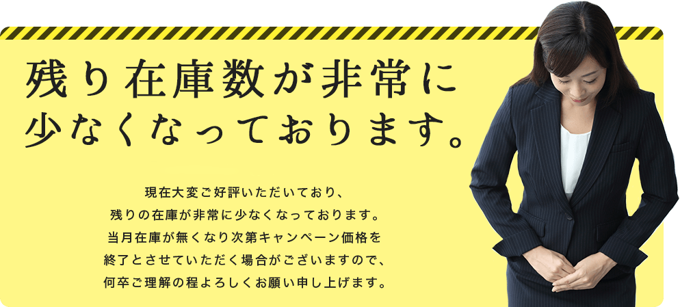
話題沸騰中の超人気商品ということもあり、在庫がかなり少なくなっているみたいです。
少しでも気になったらすぐに頼んでおいた方がいいですよ！